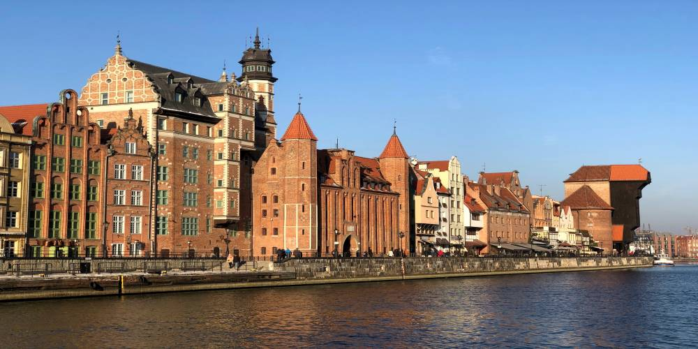

In the 21st century, Poland is one of the safest countries in Europe, frequently visited by tourists. Poland has a diversified natural environment, which is relatively unaffected by human development. Visitors are attracted by mountains, sea-coast with wide sandy beaches, and forests, lakes, riversWiki.
From the towering Tatra Mountains to the wild Baltic Sea, Poland is filled with vibrant cities known for their splendid heritage, mouthwatering cuisine and stunning architecture!📍Fun Fact - Our Maroon team member Klaudia is from Poland 🎉
1 / 5

St. Mary’s Cathedral in Gdansk is the largest brick church in Europe, which can hold over 25,000 people.
2 / 5
The Niedzica Castle, known as one of the most picturesque castles in the country, adorns the covers of many books.
3 / 5

The St.Joseph's church was built between 1905 and 1909 and is known for it neo-gothic style.
4 / 5
The Tatra Mountains forms a natural border between Poland to the north and Slovakia to the south.
5 / 5
The Wawel Castle used to be a fortress to Poland's most important Monarchs, now a pride of the nation.